INNOCENT HILL ENGINE
Por José Román Hdez / @Manz
¿Quién soy?
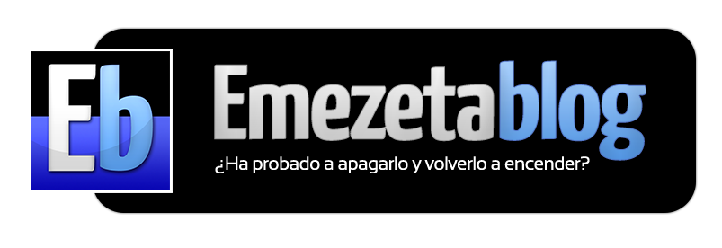Creador de Emezeta.com
Temáticas
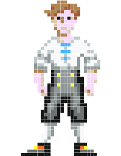
Colaborador
Colaborador en Naukas.com
PERO... ¿VAS A SEGUIR HABLANDO DE TI?
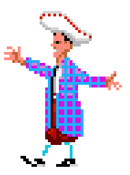Innocent Hill Engine

¿Qué es una aventura conversacional?
En realidad, es mucho más...
- Un relato, una historia, un mundo.
- Sensación (no real) de libertad.
- Una historia interactiva.
- Controlar la dirección de la aventura.
- Múltiples finales alternativos.
Basado en «El Jabato» (A.AD)
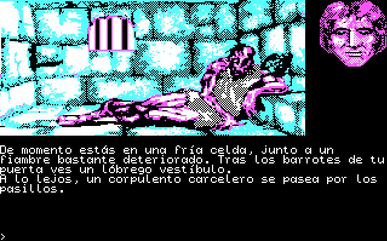¡Desde tu propio navegador!


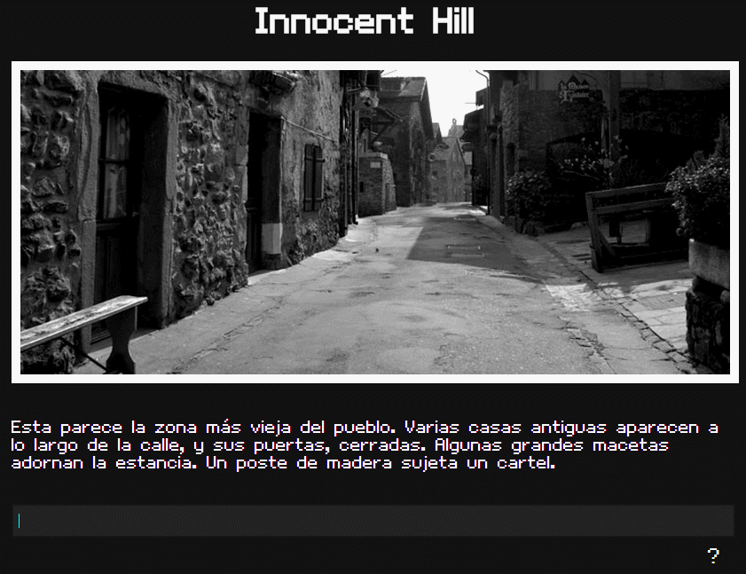
Objetivos
Fácil de jugar
¿Quién no sabe usar un navegador?
Fácil de crear
Simplemente, centrarse en la historia
Multijugador
Porque todo es mejor con amigos (o rivales)
Portátil
En cualquier lugar.
En cualquier momento.
Características
Aventura conversacional
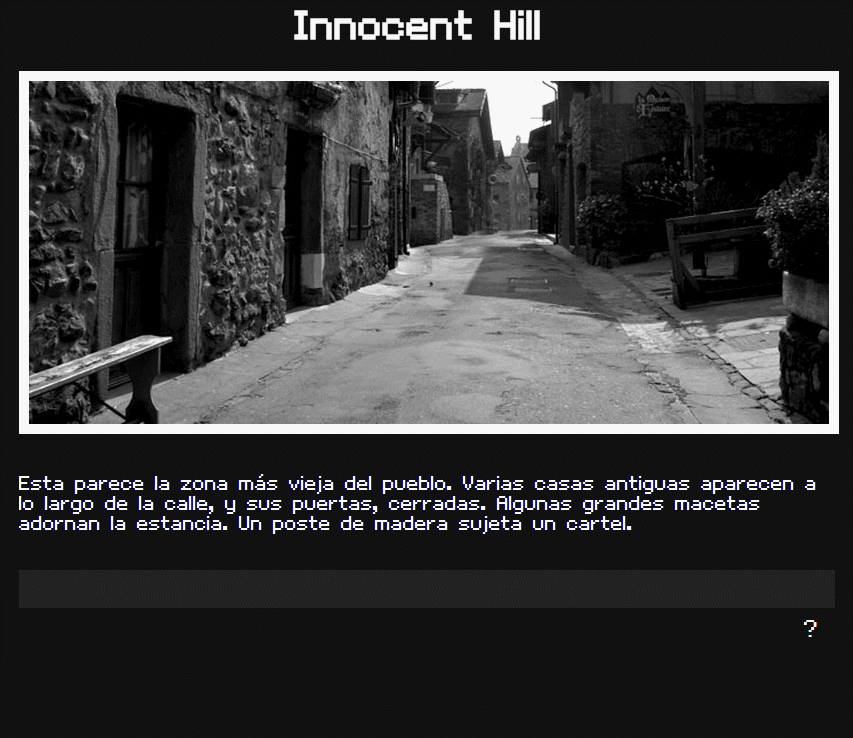Acciones principales
  Resto de acciones
- Se envían los mensajes a un «chat» multijugador
- Independiente por cada localidad
Y además es
Cualquiera puede participar y colaborar
Instalación de Innocent Hill
Es una aplicación web
WordPress
Requisitos
- Servidor de alojamiento (hosting)
- Servidor web Apache
- PHP 5.3 o superior
Instalación local
Si no tenemos un servidor de alojamiento...
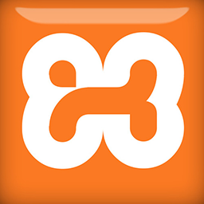Menú del uWamp
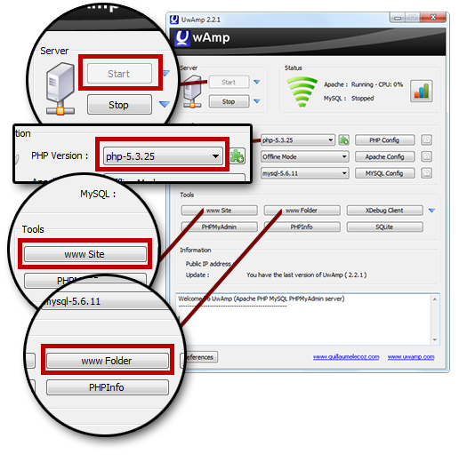Descarga del motor
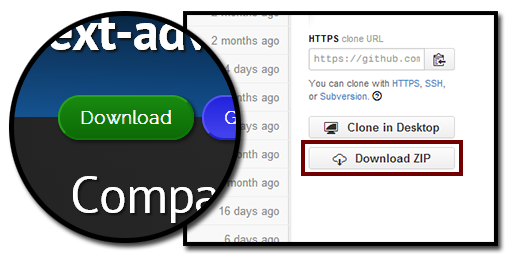Descomprime el contenido
Descomprime en la carpeta de tu servidor web.
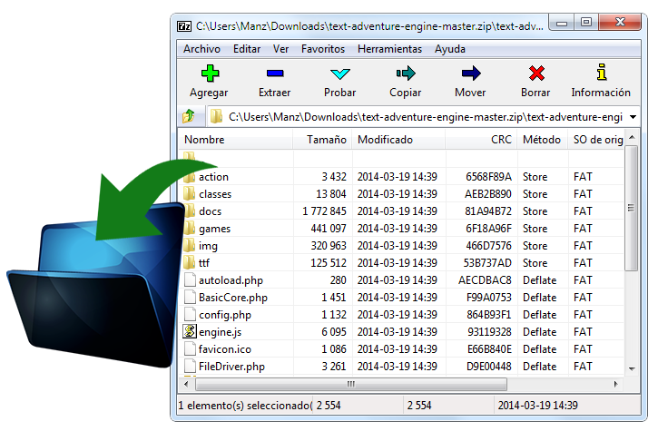¡Listo!
Ahora... ¡simplemente accede desde un navegador!
Creación de una aventura
Requisitos
- Imaginación
- Lógica
- Editar textos
- Fotografías
(o el teléfono de alguien que sepa hacerlas)
Estructura de archivos
En la carpeta games se encuentran los diferentes juegos.
El motor incluye un juego de ejemplo: default.
Cada juego contiene las carpetas...
- assets: Recursos (imágenes, sonidos...)
- chats: Chats de cada habitación
- data: Datos del juego (habitaciones, items...)
- users: Datos de los jugadores
Además de información del juego
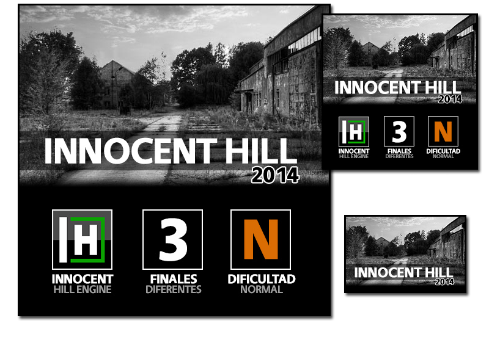Carpeta «assets»
Escenas del lugar, imágenes del objeto (inventario), música, etc...
Escenas de lugar
Recomendaciones: Formato JPEG, 700x300 píxels. HDR.
Gracias a Abandonalia, Abandonado a su suerte y Iñaki Couceiro
Conseguir buenas imágenes
Items de inventario
Recomendaciones: Formato JPEG, 128x128 píxels.
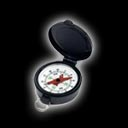 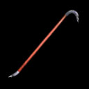Conseguir buenos iconos
- IconFinder (Gratuitas)
- IconArchive (Gratuitas)
- Clker (Dominio público)
Carpeta «chats»
Conversaciones de los usuarios en las diferentes localidades
Carpetas «data» y «users»
| Contenido | Carpeta | Archivo | ¿Qué contiene? |
|---|---|---|---|
| Localidades | data | _______.json | Mirar, andar, etc... |
| Objetos | data | items.json | Items de inventario |
| Jugadores | users | _______.json | inventario, acciones... |
¿Qué es un archivo JSON?
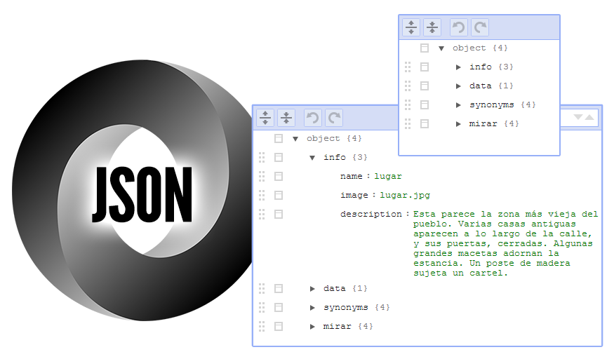Editores
- JSON Editor Online
- JSON Tinker
- Classic JSON
- JSONEdit (Windows)
- JSONLint Validator
- Editor textos: Sublime Text
Crear un lugar
Crearemos un archivo de texto en la carpeta «data».
Por ejemplo, calle.json
Bloque inicial
Creamos un bloque inicial vacío.
{
}
Los bloques se crean mediante llaves { }
Elementos
Cada elemento que crearemos tendrá esta estructura:
"elemento": "valor"
"elemento": ["valor1", "valor2", ... ]
Bloque «Información»
En el bloque info especificaremos información del lugar:
{
"info": {
}
}
Información del lugar
Por ejemplo, el nombre, imagen y descripción:
{
"info": {
"name": "lugar",
"image": "lugar.jpg",
"description": "Esta parece la zona más vieja del pueblo. Varias casas antiguas aparecen a lo largo de la calle, y sus puertas, cerradas. Algunas grandes macetas adornan la estancia. Un poste de madera sujeta un cartel."
}
}
(Las imágenes deben situarse en la carpeta «assets»)
¡Ojo a las comas!
Bloque «Data»
Creamos un nuevo bloque llamado data:
{
"info": {
...
},
"data": {
}
}
Bloque «Exits»
Dentro, creamos un nuevo bloque llamado exits:
{
"info": {
...
},
"data": {
"exits": {
}
}
}
Salidas (desplazamiento)
Y los lugares a los que podemos ir:
{
"info": {
...
},
"data": {
"exits": {
"sur": "taberna",
"oeste": "hospital",
"este": "prision"
}
}
}
Por ejemplo, al sur se llega al lugar taberna.json
Direcciones
Norte, sur, este, oeste, subir, bajar, entrar, salir.
Salidas (desplazamiento)
Con condiciones (necesitas la llave roja):
{
"info": {
...
},
"data": {
"exits": {
"sur": {
"required" : "llave roja",
"target" : "taberna",
"excuse" : "La puerta está cerrada con llave."
}
}
}
}
Items (Objetos)
Creamos un archivo items.json donde colocaremos TODOS los items que podemos guardar en nuestro inventario.
Items (Inventario)
Con condiciones (necesitas la llave roja):
{
"llave roja": {
"room": "calle.json",
"image": "llave_roja.jpg",
"look": "Una paqueña llave roja.",
"message": "He cogido la llave roja."
},
...
}
Inventario
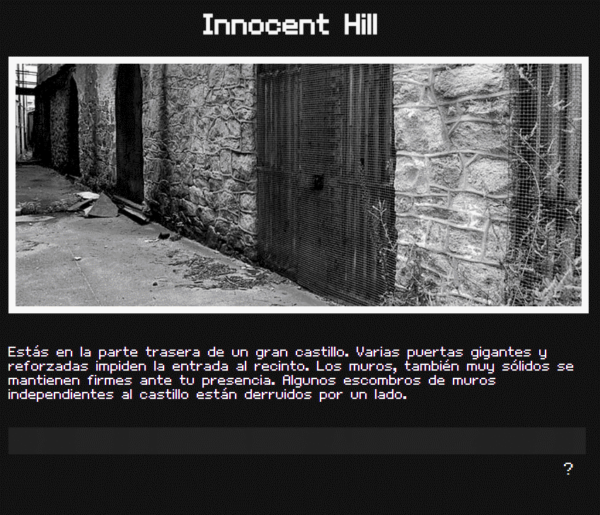Items y Acciones
Los items son objetos de inventario.
Las acciones son hechos transparentes.
Acciones automáticas
Al visitar un lugar, se crea la acción lugar_visited.
Al mirar un objeto (con condiciones superadas), se crea la acción objeto_seen.
Salidas condicionales
Si tienes brújula llegas, si no la tienes, te pierdes:
{
"info": {
...
},
"data": {
"exits": {
"sur": {
"required" : "brujula",
"target" : "casabosque",
"else" : "bosque"
}
}
}
}
Mirar
Objetos de inventario, en items.json.
Objetos del lugar, en el archivo concreto: calle.json.
Mirar
Objetos de inventario: en items.json.
{
"info": {
...
},
"data": {
...
},
"mirar": {
"muro": "Hay un muro de ladrillos justo delante de ti.",
"ladrillo": "Ladrillos pequeños, rojos y de aspecto antiguo."
}
}
Sinónimos
Nombre general: alternativa1, alternativa2...
{
...
"synonyms" : {
"ladrillo": ["ladrillos", "bloque", "bloques"]
},
"mirar": {
"muro": "Hay un muro de ladrillos justo delante de ti.",
"ladrillo": "Ladrillos pequeños, rojos y de aspecto antiguo."
}
}
Mirar (avanzado)
Crear una acción y aumentar puntos:
{
...
"mirar": {
"pared": {
"message": "Hay una sospechosa inscripción que dice «45823».",
"setAction": "inscripcion_vista"
}
}
}
Números o cantidades
Útil para contadores (inc +1):
{
...
"mirar": {
"pared": {
"message": "Hay una sospechosa inscripción que dice «45823».",
"setAction": "inscripcion_vista",
"inc" : "score"
}
}
}
Números o cantidades (II)
También es posible decrementar y/o especificar la cantidad:
{
...
"mirar": {
"pared": {
"message": "Hay una inscripción maligna: «BELÉN ESTEBAN».",
"setAction": "inscripcion_maligna_vista",
"dec" : "score@5"
}
}
}
Condiciones avanzadas
Es posible especificar condiciones más complejas en required:
{
"info": {
...
},
"data": {
"exits": {
"sur": {
"required" : "brujula",
"target" : "casabosque",
"else" : "bosque"
}
}
}
}
Condiciones avanzadas
- "brujula": Tenerlo en el inventario
- "!brujula": no tenerlo en inventario
- "#score@5": tener 5 o más en score
- "-brujula": haber cogido y dejado el objeto
- "-brujula@calle: haber dejado el objeto en la calle
- "+brujula": haberlo cogido alguna vez
Finales alternativos
Al margen del final oficial de la historia, es posible (y recomendable) crear finales alternativos.
Bloque finales
Creamos bloque ends, dentro del bloque data del lugar donde quieres que finalice la aventura:
{
"data": {
"exits": {
...
},
"ends": {
"good": {
"required": ["house_visited", "mapa_seen", "#score@200"],
"title": "Good ending",
"text": "Mensaje del final",
"showscore": "score"
}
}
}
}
También se puede usar target para redirigir a una URL.
Consejos
- Puedes crear laberintos con lugares similares
- Llaves: palanca, tarjeta-ID, pomo...
- Crea muchos objetos mirables
- Usa el humor
- Usa acentos sólo en descripciones
- UTF-8
Características futuras
Lo que está por venir...
Diálogos estilo aventura gráfica
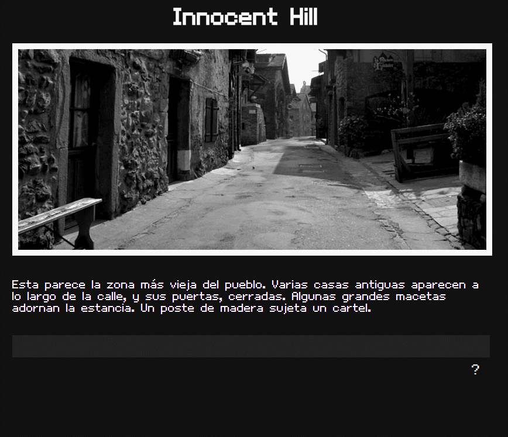Características futuras
- Skins o temas gráficos
- Gestor de juegos instalados
- Logros conseguidos
- Mejorar parser (usar alternativos)
- Generación automática de mapas
- Soporte bases de datos (SQLite)
Administrador para el anfitrión
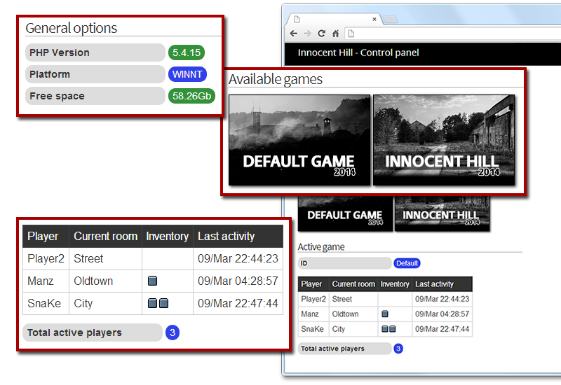Editor visual de aventuras
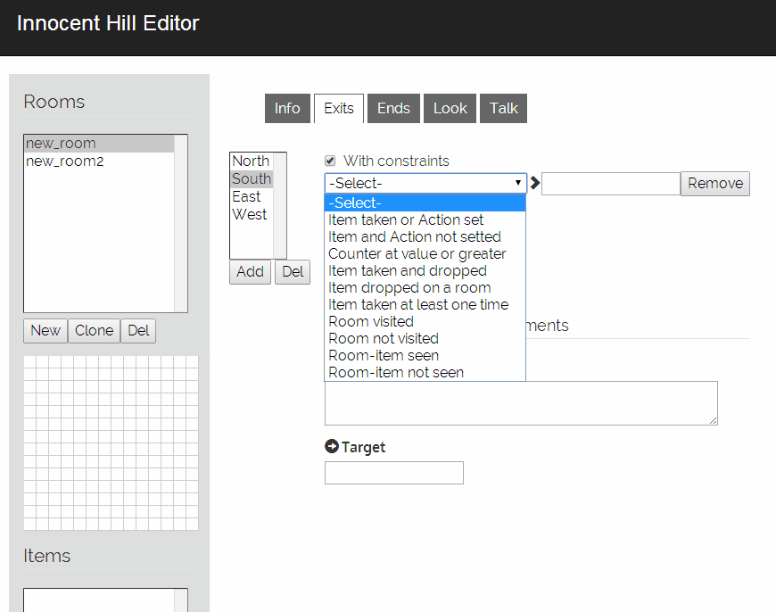¡Eso es todo!
¿Dudas? ¿Ideas? ¿Preguntas?
Contacto: manz@emezeta.com
Innocent Hill Engine